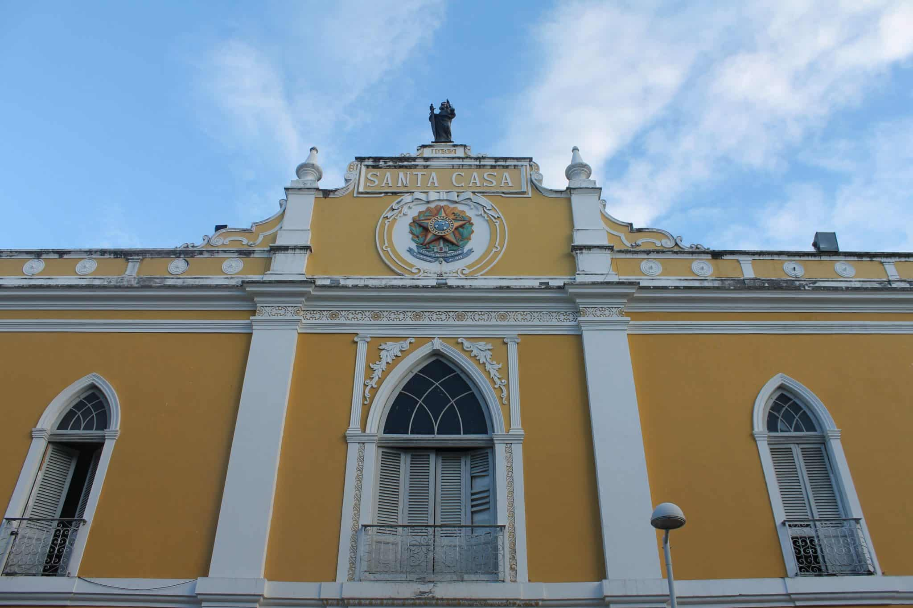
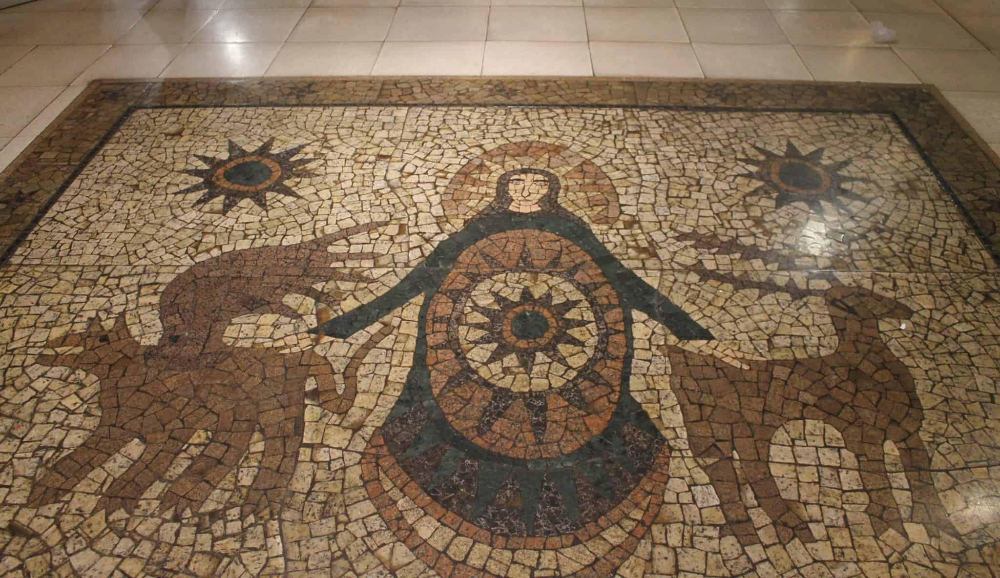

Recife Antigo
Desde sempre e até hoje, o Recife Antigo é o lugar de todas as tribos, o bairro com a cara da explosão multi-cultural que acontece em Recife. A diversidade de atrações atrai um público bem amplo, e isso talvez seja a coisa mais legal do Recife Antigo – tem espaço pra todo mundo. Um passeio a pé pelas atrações do Recife Antigo junta história, cultura, arte, muita música e paisagens bonitas. Você pode fazer um passeio por conta própria, ou contratar uma agência que oferece um tour em Recife. Esse roteiro no Recife Antigo fica ainda mais perfeito se for feito em um dia de domingo, quando o bairro fica ainda mais movimentado e interessante.
Paço Alfândega Office e Mall
O nome mudou, mas o espaço continua uma delícia para visitar. Histórico e bonito, este centro comercial funciona em um prédio de 1732, que já foi a Anfândega de Recife e antes disso um convento dos padres da Ordem de São Felipe Néri (Convento dos Oratorianos). Quando o porto se mudou do Recife Antigo para a beira-mar, o prédio parou de funcionar como Alfândega, foi doado à Santa Casa de Misericórdia, e passou a ter diversos usos, desde armazém até estacionamento.
No passado, a gente chamava somente de Shopping Paço Alfândega. Mas recentemente, o lugar vem passando por algumas reformas e mudou de nome, agora se chama Paço Alfândega Office e Mall. Se o nome vai pegar, não sei. Para mim, sempre será o Shopping Paço Alfândega. Ele fica logo na entrada do bairro do Recife Antigo, e oferece uma boa estrutura para servir como ponto de partida para nosso roteiro. Se você vai de carro para o Recife Antigo, há um estacionamento rotativo que funciona no prédio anexo. A decoração de pisos e paredes é inspirada na Movimento Armorial, uma iniciativa artística que buscou criar uma arte erudita a partir de elementos da cultura popular do Nordeste brasileiro.
Livraria da Jaqueira
Se você é um apaixonado por livros, esse lugar no Recife Antigo é imperdível. Tem que estar no seu roteiro! A Livraria da Jaqueira funciona no prédio anexo ao Paço Alfândega no Recife Antigo, e é um verdadeiro oásis para os amantes da literatura. A decoração do ambiente é maravilhosa, você pode escolher um cantinho e ficar por ali folheando livros, ou apenas dar uma volta, espiando as prateleiras. Tem até um café, se bater vontade de um lanchinho.
Igreja Madre de Deus

Na rua atrás do Cais da Alfândega (rua Madre de Deus), fica uma das igrejas históricas de Recife: a Igreja Matriz Madre de Deus. Na rua atrás do Cais da Alfândega (rua Madre de Deus), fica uma das igrejas históricas de Recife: a Igreja Matriz Madre de Deus.